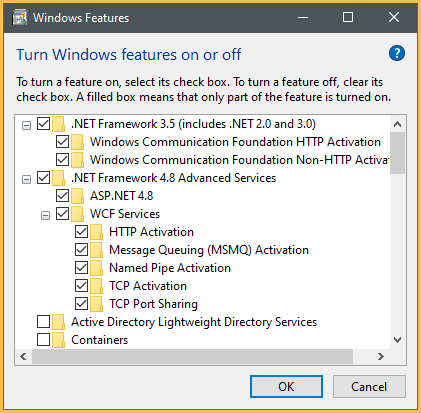
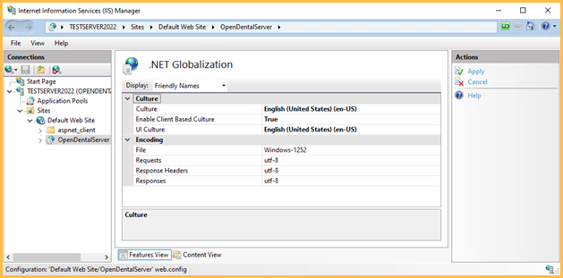

Middle Tier Installation
See Middle Tier.
Follow the steps below to install Middle Tier.
Before Setup
Install and perform updates directly from the Middle Tier server. Any attempt to perform an update from another computer will cause errors.
These items must be checked before beginning setting up Middle Tier.
- Locate the OpenDentImages folder, then run Setup.exe. This ensures all the correct libraries and folders are installed.
- Ensure that Open Dental can connect to the production database on the selected Middle Tier server.
- Make sure all Open Dental Users that will be connecting through Middle Tier have a Password created.
- In the production database, change the Update Server in Preferences to match the Middle Tier server name.
- See MySQL Security if strong MySQL security is required.
Installation
Perform the installation directly on the Middle Tier server. Log in as an administrative user.
Step 1: Download this file (right-click, Save As): OpenDentalServerConfig.xml, and place it in the application directory of Open Dental on the Middle Tier server. Edit the file to set the users and passwords.
- If MySQL users/passwords are not set up, use root for the User and leave the password blank.
- The password should be plain text and entered in both Password and PasswordLow sections.
- To enable running reports through Middle Tier, also enter MySQL user credentials in the UserLow and PasswordLow sections. See MySQL Security for instructions on creating a MySQL read-only user account for this purpose. If a read only user account is not needed, the root user can be used.
Step 2A: Windows Server Users
- Navigate to the Manage menu and select Add Roles and Features.
- Select Role-based or feature-based installation.
- Within Server Selection, ensure the information selected is accurate and valid. If yes, then click Next.
- Ensure that all aspects of IIS, ASP.net, and DotNet are selected within the Server (IIS) selection.
- Server (IIS)
- Common HTTP Features
- Default Document
- Directory Browsing
- HTTP Errors
- Static Content
- Security
- Request Filtering
- IIS Client Certificate Mapping Authentication
- Windows Authentication
- Application Development
- .Net Extensibility 3.5
- .Net Extensibility 4.8
- ASP.NET 4.8
- ISAPI Extensions
- ISAPI Filters
- Common HTTP Features
- Management Tools
- IIS Management Console
- IIS 6 Management Compatibility
- IIS Metabase Compatibility
- IIS Management Scripts and Tools
- Management Service

- Server (IIS)
- Verify that .Net 3.5 and 4.8 features are selected.
- NET Framework 3.5 Features
- Net Framework 3.5 (includes .NET 2.0 and 3.0)
- HTTP Activation
- Non-HTTP Activation
- .NET Framework 4.8 Features
- .NET Framework 4.8
- ASP.NET 4.8
- WCF Services (all)

- NET Framework 3.5 Features
- Confirm the selections and click Install.
Step 2B: Windows 10 / Windows 11 Users
- Open Windows Features by pressing Win + R to open Run and type 'optionalfeatures', click Enter.
- In Windows Features, ensure the following features are enabled:
- .NET Framework 4.8 Advanced Services
- ASP.NET 4.8
- WCF Services (all)
- Internet Information Services
- Web Management Tools
- IIS Management Console
- World Wide Web Services
- Application Development Services
- .NET Extensibility 3.5
- .NET Extensibility 4.8
- Application Initialization
- ASP.NET 4.8
- ISAPI Extensions
- ISAPI Filters
- Application Development Services
- Common HTTP Features
- Default Document
- Static Content
- Security
- IIS Client Certificate Mapping Authentication
- Request Filtering
- Windows Authentication
- Web Management Tools
 - .NET Framework 4.8 Advanced Services
- Click OK and allow Windows to install the additional features.

Step 3: Open the IIS Management Console:
- Open Internet Information Services (IIS) Manager by searching the Start menu or Win + R and enter 'InetMgr.exe', click Enter.
- Expand Connections and click Application Pools.

- Right-click DefaultAppPool, Advanced Settings.

- Ensure the .NET CLR Version is 4.0 and Enable 32-Bit Applications is True.
- Click OK.
Step 4: In Connections, right-click Default Website, Add Application.

The Alias determines how the connection is referred to in the URI. This can be anything, but the physical path needs to point to the Open Dental application folder.
Step 5: Configure .Net Globalization with the appropriate Culture settings.
- Click on OpenDentalServer, then double click .NET Globalization.
- Set the Culture and UI Culture languages to match the region. 
- Set Enable Client Based Culture to True and click Apply.

Step 6: Open the IIS Manager and select the OpenDentalServer site in the object browser. Double-click on the Configuration Editor.

Step 7: Use the Section dropdown at the top of the Configuration Editor to select the system.web/httpRuntime section

Step 8: Modify the maxRequestLength attribute and click Apply on the right.

Step 9: Use the Section dropdown at the top of the Configuration Editor to select the system.webServer/security/requestFiltering section.

Step 10: Expand the requestLimits attribute, modify the maxAllowedContentLength value, and click Apply on the right.

Step 11: When connecting from a client workstation, the Choose Database window looks similar to this. Test this on the server first, then on workstations.

- Enter the URI. If unsure what to use for the URI, see What is my URI? in Troubleshooting below.
- Enter the log on credentials, Open Dental User (not MySQL user) and Password, of the user logging in.
- Check Log me in automatically to allow users to automatically log on using their associated Windows user. See, Single Sign-on below.
The above connections settings will be used from other workstations, but not from the Middle Tier server. After the initial testing, the upper direct connection settings will be used anytime on the server. This is required in order to perform version updates.
Step 12: When running Open Dental as Administrator and connecting via Middle Tier, there should be a FreeDentalConfig file in the application folder similar to the image below. This file should replace the existing .xml file on all the workstations. 
Additional Setup Options
- Proxy Server
- Middle Tier Security Certificate (Middle Tier across internet)
- Host Multiple Databases from One Web Server
Single Sign-on
Set up single sign-on to allow users to automatically log into Open Dental.
To enable:
- Launch Open Dental.
- In the Choose Database window, enter the Open Dental user name and password.
- Check Log me in automatically.
- Click OK to save.
The FreeDentalConfig file will store the state of the Log me in automatically check box and the credentials will be stored within the Credential Manager. See Technical Details below for more information.
To disable (requires the Choose Database, Permissions):
- Launch Open Dental.
- In the Main Menu select File, Choose Database to open the Choose Database window.
- Uncheck Log me in automatically.
- Click OK to save.
The FreeDentalConfig file will store the state of the Log me in automatically check box and the user will be prompted to enter their user name and password the next time Open Dental is launched.
If the user does not have security permissions, disable single sign-on in the FreeDentalConfig file:
- Navigate to the Open Dental directory, typically C:\Program Files (x86)\Open Dental.
- Right-click the FreeDentalConfig file and select Edit or Open With and select Notepad.
- Look for <UsingAutoLogin>True</UsingAutoLogin> and replace True with False.
- Save the file.
The next time the user launches Open Dental, they will be prompted to enter their user name and password.
Technical Details
When using the single sign-on feature via Middle Tier Open Dental makes use of the Credential Manager that comes natively to all Windows 8 and higher versions. The Credential Manager was designed by Microsoft for 3rd party app developers on the Windows Store. This created a uniform and secure place for Microsoft app developers to store user credentials and passwords. The information entered in to the Credential Manager requires a user sign in to access and takes care of all encryption. As such the user should not remove the Credential Manager entry that Open Dental has made or else the feature will no longer work.
The Windows user currently logged in must have read and write permissions to the FreeDentalConfig file in order to enable single sign-on. Do not right-click on the Open Dental shortcut on the Desktop and run as administrator if the Windows user currently logged in does not have elevated privileges. Windows will prompt for administrator credentials when the user does not have sufficient privileges. Entering another user's credentials will cause the Open Dental credentials entered into the Choose Database window to be stored under the other user's Credential Manager and single sign-on may not work as expected.
Also see Middle Tier Troubleshooting